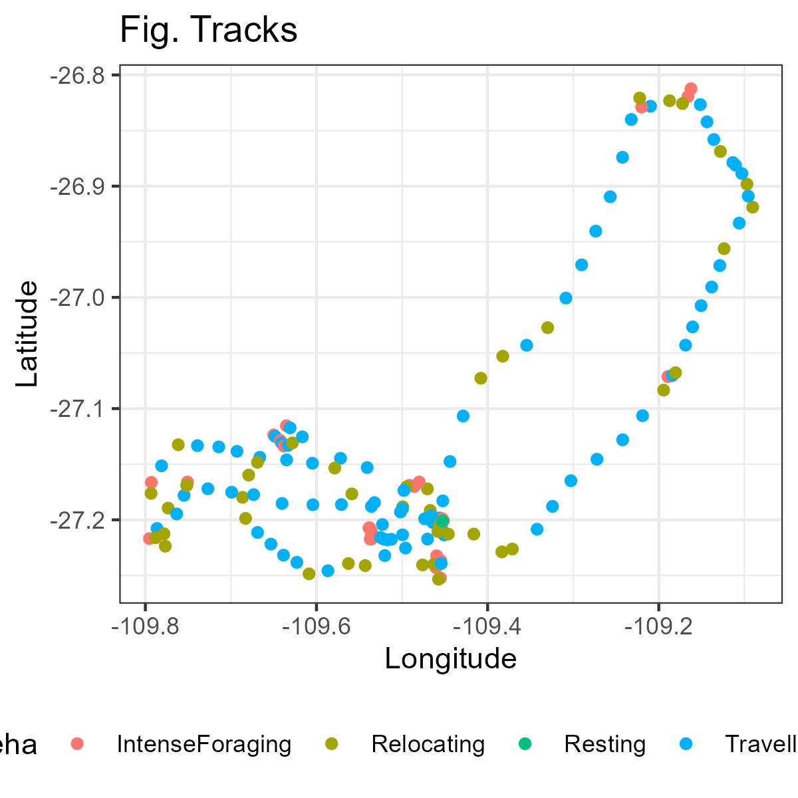

#devtools::install_github("MiriamLL/sula")
library(sula)EMbC
r
biologging
Y2021
Classify behaviours using Expectation-Maximization Binary Clustering.
Intro
In this post, you will learn how to:
- Classify behavioral states during foraging trips from test data from Masked boobies.
Data
Load data. This test data is from masked boobies.
To access the data you have to install the package sula: devtools::install_github(“MiriamLL/sula”)
GPS_raw<-as.data.frame(GPS_raw)
GPS_ind<-subset(GPS_raw,GPS_raw$IDs=='GPS01')Nest or no nest?
The data I am using does not include locations when the animal was on the nest.
To remove the nest locations, in the package sula there is this function recortar_periodo which allows you to filter your data and keep the period when the bird was at sea.
For the example, I know the time when this individual (GPS_01) started and ended its trip and keep the locations inside this time range.
If you dont have this information, you might need to first identify the start and end of trips.
GPS_ind<-recortar_periodo(GPS_data=GPS_ind,
inicio='02/11/2017 18:10:00',
final='05/11/2017 14:10:00',
dia_col='DateGMT',
hora_col='TimeGMT',
formato="%d/%m/%Y %H:%M:%S")Next, I create a new column named tStamp and transformed it to the corresponding class.
GPS_ind$tStamp<-paste(GPS_ind$DateGMT,GPS_ind$TimeGMT)
GPS_ind$tStamp <- as.POSIXct(strptime(GPS_ind$tStamp,"%d/%m/%Y %H:%M:%S"),"GMT")
class(GPS_ind$tStamp)Check that you have the right class for your columns.
GPS_ind$lon<-as.numeric(GPS_ind$Longitude)
GPS_ind$lat<-as.numeric(GPS_ind$Latitude)
GPS_ind$id <- as.factor(GPS_ind$IDs)Then I select only columns that will be important in the analyses.
library(tidyverse)Data<-GPS_ind%>%
select('id','tStamp','lon','lat')
head(Data)EMbC
I strongly recommend to read this article by Garriga et al. 2016 and to check the vignette.
As in vignette: ‘The Expectation-maximization binary clustering (EMbC) is a general purpose, unsupervised, multi-variate, clustering algorithm, driven by two main motivations: (i) it looks for a good compromise between statistical soundness and ease and generality of use - by minimizing prior assumptions and favouring the semantic interpretation of the final clustering - and, (ii) it allows taking into account the uncertainty in the data. These features make it specially suitable for the behavioural annotation of animal’s movement trajectories.’
You need to have the package installed otherwise you need to install it using the install.packages(‘EMbC’).
library(EMbC)In the package EMbC, the function stbc performs the standard velocity/turn clustering of the trajectory.
In the script, [2:4] means that you are including from the 2nd to the 4th column. These columns should be 2th - tStamp, 3th - lon, and 4th - lat.
The -1 in info means that any iteration is supress.
Data_bc<-stbc(Data[2:4],info=-1) Check delimiters
Mean and sd
In the package EMbC, the function stts offers a compact view of the parameter set.
- LL stands for Low velocity Low turn
- LH stands for Low velocity High turn
- HL stands for High velocity Low turn
- HH stands for High velocity High turn
kn is the marginal distribution of the cluster in absolute and percentage values
stts(Data_bc)Mins and Maxs
You can also check the mimimum and maximum velocity and radians (turning angle).
- X1.min is the minimum velocity
- X2.min is the minimum turning angle
- X1.max is the maximum velocity
- X2.max is the maximum turning angle
Data_bc@RHere is important that you check that these values make sense. Turning angle should be between 0 and 3.14. Velocity varies according to your species.
For boobies this information can be translated to:
- LL for Resting
- LH for Intense foraging
- HL for Travelling
- HH for Relocating
You can also compare your results with Table 2 in Mendez et al. 2017, or in methods from Lerma et al. 2020
Graphically
To see this information graphically, you can use the function sctr from the package EMbC.
- LL - Resting - in orange
- LH - Intense foraging - in red
- HL - Travelling - in light blue
- HH - Relocating - in dark blue
sctr(Data_bc)To see how the track looks according to the classification you can use the view function from the package EMbC.
EMbC::view(Data_bc)Export delimiters
To export the delimiters you can extract information into a data frame and rename the columns.
Class_bc<-as.data.frame(Data_bc@R)
names(Class_bc)<-c('velocity.min','radian.min','velocity.max','radian.max')Originally, the values of velocity are in m/s, therefore you can convert them to km/h to compare with the literature more easily.
Class_bc$velomin_km<-Class_bc$velocity.min*3.6
Class_bc$velomax_km<-Class_bc$velocity.max*3.6You can use the function write_csv to export the delimiters.
In the example below, I use the function here and define the folder where I want the file to be.
library(here)
write_csv(
Class_bc,
file=paste0(here::here(),"/blog/2021-11-25-embc",'/Behavioural_delimiters.csv'))Tracking data
Behaviors
You can add the information of velocity and turning angle into you GPS data.
Data$Beha<-Data_bc@AIt returns numbers which correspond to:
- 1 - LL - Resting
- 2 - LH - Intense foraging
- 3 - HL - Travelling
- 4 - HH - Relocating
- 5 - Unknown
If you want to add a column explaining what this numbers mean you can use the following functions.
library(dplyr)Data<-mutate(Data, Beha_class = ifelse(Data$Beha == "1", "LL",
ifelse(Data$Beha == "2", "LH",
ifelse(Data$Beha == "3", 'HH',
ifelse(Data$Beha == "4", "HL",
"Unknown")))))or
Data<-mutate(Data, Behaviour = ifelse(Data$Beha == "1", "Resting",
ifelse(Data$Beha == "2", "Intense foraging",
ifelse(Data$Beha == "3", 'Travelling',
ifelse(Data$Beha == "4", "Relocating",
"Unknown")))))Velocity
You can add the velocity in a column of your GPS data frame.
head(Data_bc@X)Velocity is in the first column, therefore we use the [,1]. Also, to transform it to km/h multiply per 3.6.
Data$Velocity_ms<-Data_bc@X[,1]
Data$Velocity_kmh<-Data$Velocity_ms*3.6Heading direction
Heading direction is on the second column, therefore we use the [,2].
Data$HeadingDirection<-Data_bc@X[,2]Check
Finally you can check the range to coincide with your delimiters.
Data %>%
group_by(Behaviour) %>%
summarise(Velo_min=min(Velocity_kmh),
Velo_max=max(Velocity_kmh),
Angle_min=min(HeadingDirection),
Angle_max=max(HeadingDirection))Plot
You can plot the GPS tracking data according to their behaviours using the function ggplot
ggplot(data = Data,
aes(x=lon, y = lat))+
geom_point(aes(colour = Behaviour))+
theme_bw()+
theme(legend.position = "bottom") +
labs(x = "Longitude", y="Latitude")+
ggtitle('Fig. Tracks')Further
If you are not satisfied with the classification and the delimiters, you can set your own behavioural classification using the turning angle and velocity.
For example, using data from Mendez et al 2017.
Data<-mutate(Data, New_beha = ifelse(Data$Velocity_kmh >= 0 &
Data$Velocity_kmh <= 4 &
Data$HeadingDirection >= 0 &
Data$HeadingDirection <= 0.30,
"Resting",
ifelse(Data$Velocity_kmh >= 0 &
Data$Velocity_kmh <= 14 &
Data$HeadingDirection >= 0.30 &
Data$HeadingDirection <= 3.14,
"IntenseForaging",
ifelse(Data$Velocity_kmh >= 4 &
Data$Velocity_kmh <= 90 &
Data$HeadingDirection >= 0 &
Data$HeadingDirection <= 0.31,
"Travelling",
ifelse(Data$Velocity_kmh >= 14 &
Data$Velocity_kmh <= 90 &
Data$HeadingDirection >= 0.31 &
Data$HeadingDirection <= 3.14,
"Relocating",
"Unknown")))))ggplot(data = Data,
aes(x=lon, y = lat))+
geom_point(aes(colour = New_beha))+
theme_bw()+
theme(legend.position = "bottom") +
labs(x = "Longitude", y="Latitude")+
ggtitle('Fig. Tracks')
References and recommended literature
EMbC
Boobies
Other Species
Alternative options